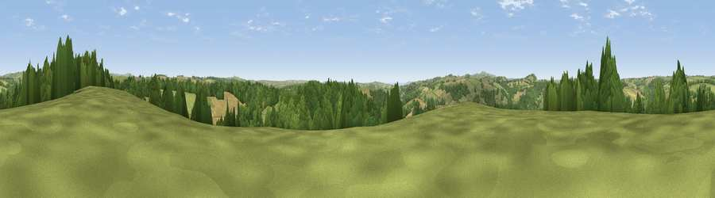

Viewpoint near Lostwithiel
#16614 in England · top 34% of its area beats it · near LostwithielThe view, rendered

A 360° render of this exact spot computed from the terrain model, tree cover and land cover — summer colours, afternoon light, calibrated against photographs of famous viewpoints. Real trees, hedges and buildings will differ in detail.
The panorama
Grey silhouette: terrain skyline in each direction (720 bearings, Earth curvature and refraction included). Dashed green: skyline with trees (+15 m) and buildings (+8 m) as obstacles. Blue strip: how far the ground is visible on each bearing.
Where the view opens
Wedge length = distance to the farthest visible ground on that bearing (vegetation-aware). Rings at 10, 25 and 50 km.
What fills the view
45% grassland · 40% woodland · 14% cropland · 1% built-up
Angular shares of the visible panorama (visual magnitude), not map area. Landscape diversity 0.46 (0–1 Shannon).
Key numbers
More beautiful places nearby
The staircase of upgrades: each row has a higher view potential than everything closer. Driving times are estimates from straight-line distance, calibrated against real road routing — check an actual route before setting out.
| Place | Direction | Drive | Score |
|---|---|---|---|
| Viewpoint near Cardinham | NE · 1 km | ~3 min | 58.0 |
| Viewpoint near Lostwithiel | SW · 4 km | ~9 min | 68.6 |
| Viewpoint near Lanlivery | SW · 4 km | ~9 min | 72.0 |
| Viewpoint near Lanivet | W · 5 km | ~11 min | 73.1 |
| Viewpoint near Lanreath | ESE · 8 km | ~17 min | 75.7 |
| Viewpoint near Trethurgy | SW · 12 km | ~23 min | 84.1 |
| Pencarrow Head | SSE · 13 km | ~24 min | 86.0 |
| Viewpoint near Stenalees | WSW · 13 km | ~24 min | 88.0 |
50.43998, -4.65140 · source: screening · position refined by local search. Computed location — check access rights before visiting.